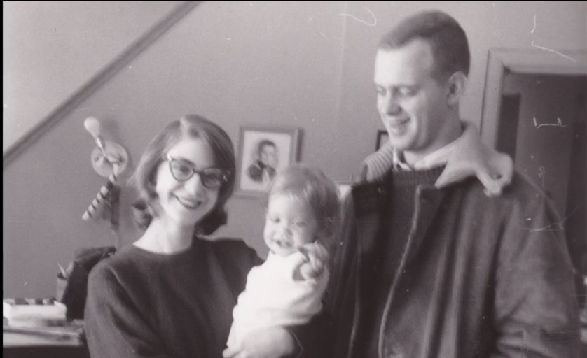
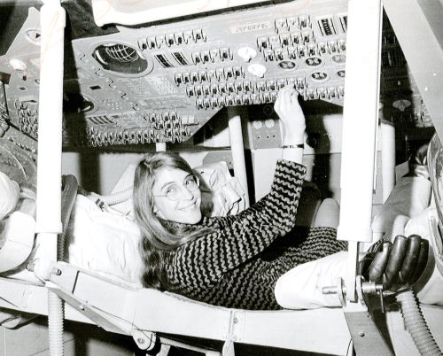
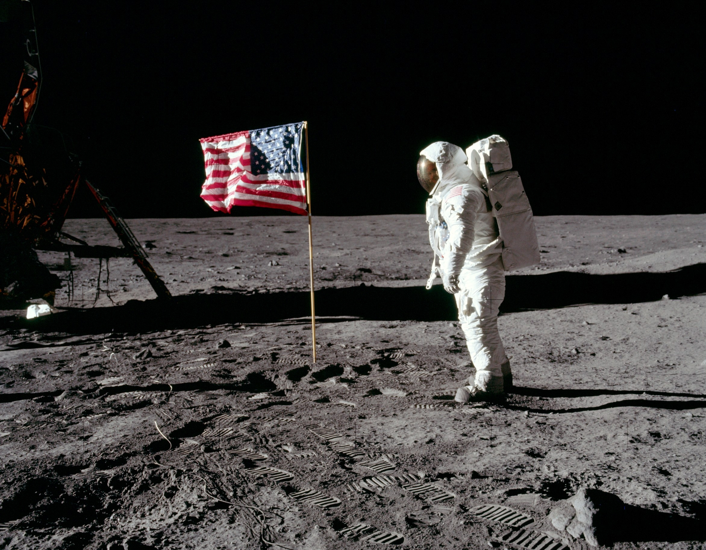
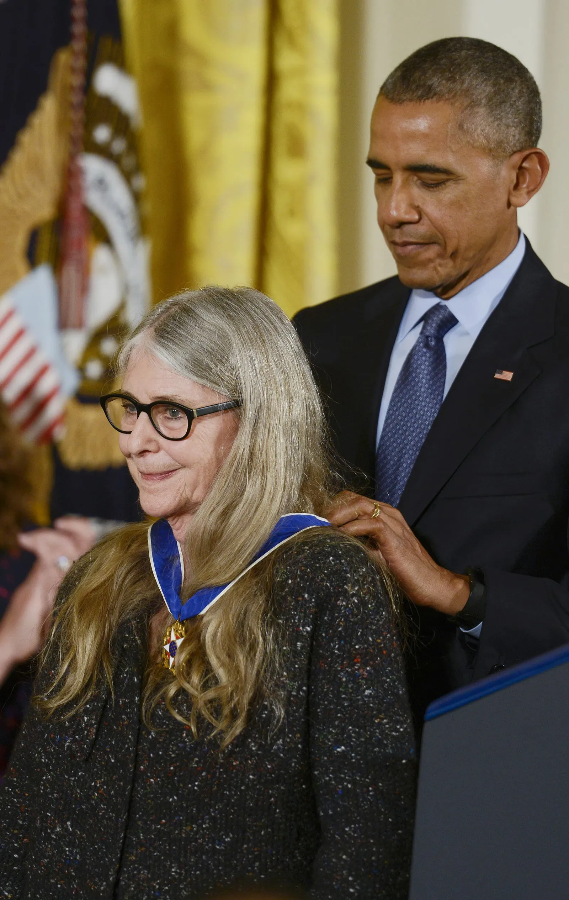

Infância
Margaret Heafield nasceu no dia 17 de Agosto de 1936 na cidade de Paoli do Estado de Indiana, Estados Unidos. Filha de uma matemática (Ruth Esther Heafield) de um poeta Kenneth Heafield.
Curiosa e quebrando regras
Quando pequena, Margaret costumava questionar tudo em sua volta e adorava "solucionar problemas".
Questionava por que as meninas não jogavam baseball e também por que haviam tão poucas mulheres doutoras, juízas e cientistas.
A partir desses questionamentos, Margaret decidiu entrar para o time dos garotos de baseball para mostrar que uma garota também poderia jogar e posteriomente decidiu estudar
música, artes e especialmente, matemática.
Universo e Computadores
Margaret costumava fazer questionamentos também sobre o universo, perguntava como os planetas se moviam, como as galáxias são formadas e por que as estrelas brilhavam. A Lua também era objeto dos seus questionamentos.
Margaret costumava usar álgebra e geometria para resolver os problemas do dia a dia e quando descobriu os computadores percebeu que poderia utilizá-los para realizar cálculos e resolver problemas, incluindo resolver os seus próprios questionamentos.
Formação
Margaret concluiu o Ensino Médio em 1954 na Hancock High School, depois estudou na Earl College para obter graduação em Matemática e lá conheceu o então futuro marido, James Cox Hamilton. Em 1958 se graduou em Matemática e também se especializou em Filosofia, depois casou-se com James Hamilton e posteriormente tiveram uma filha, Lauren.
Carreira
Em 1959, Margaret planejava obter PhD em Matemática Abstrata, porém em meados do mesmo ano Margaret
aceitou trabalhar para o Departamento de Meteorologia no MIT, trabalhando com Edward Norton Lorenz. Na época,
Margaret aceitou o emprego para ajudar o marido enquanto ele estudava Direito.
No Departamento de Meteorologia, Margaret, com apenas 24 anos, trabalhou no desenvolvimento de softwres para previsão meteorológica.
O seu trabalho também contibuiu para as publicações de Lorenz sobre a teoria do caos.
Projeto SAGE
No projeto SAGE, Margaret trabalhou no desenvolvimento de simuladores de vôo para treinamento de equipes antibomba do departamento de defesa antiárea dos Estados Unidos.
O trabalho que seria temporário se tornou fundamental para a grande missão de Margaret que ainda estaria por vir...
Projeto Apollo
A Missão Espacial Apolo tinha o objetivo de levar o homem à lua pela primeira vez.
Graças as projetos anteriores no MIT, Margaret integrou ao laboratório Charles Stark Draper do MIT para tabalhar no projeto da Missão Espacial.
Margaret foi inicialmente contratada para o cargo de programadora, porém tempos depois passou a trabalhar em projetos de sistemas.
Uma parte da equipe de Margaret ficou encarregada pelo software de módulo de comando, responsável pelo sistema de navegação e orientação
de pouso lunar. A outra parte da equipe lidava com software de detecção e recuperação de erros.
Não demorou para Marget subir de cargo e se tornar chefe do time como Diretora de Engenharia de Software da NASA.
Cientista e mãe
Não tendo com quem deixar a sua filha Lauren em casa, Margaret a levava para o laboratório no turno da noite e finais de semana. Isso rendeu muitos comentários à Margaret sobre os cuidados com sua filha.

“[..] Principalmente homens estavam trabalhando lá, e eles tem alguém em casa para cuidar dos seus filhos. Eu não tinha escolha … Eu trazia minha filha, Lauren, pro trabalho nas noites e fins de semana [..]"
"O Bug da Lauren"
Entretanto, foi a sua filha Lauren que abriu o caminho para Margaret salvar a missão do Apollo 11 ...
No trabalho, Margaret lidava com simuladores para testar o software sob o comando dos astronautas, então em um certo dia Lauren decidiu "brincar" no simulador e apertou teclas de comando que acabou disparando um aviso de erro no computador.
 O aviso de erro apontava para sobrecarga no sistema após Lauren acionar alguns comandos no simulador. Com sobrecarga, o computador entraria em modo recuperação apagaria os dados para liberar memoria. Diante disso, Margaret decidiu reportar aos superiores que a perda de dados poderia ocorrer caso os astronautas apertassem muitos comandos ao mesmo tempo.
Porém, os superiores não não autorizaram Margaret a modificar o software:
[..] " 'Isso nunca vai acontecer porque os astronautas são muito bem treinados. Simplesmente não vai acontecer'. Eu disse, 'mas e se acontecer?' Toda a minha ênfase sempre foi 'e se?', certo?" - Margaret Hamilton (tradução livre)
Algo deu errado ...
Entretanto, durante a missão do Apolo 8 (missão que levou astronautas à órbita da Lua), no meio do caminho um astronauta apertou uma tecla errada no comando e o computador perdeu parte dos dados da missão. Os engenheiros levaram 9 horas para solucionar o problema enviando um conjunto de dados de reposição ao computador da Apollo. Problema este que poderia ter sido evitado se os superiores tivessem permitido Margaret de implantar uma solução. Diante disso, os superiores viram que a possibilidade de falha era real e autorizaram Margaret a modificar o programa para implementar a sua solução.
O três minutos que antecederam o grande passo da humanidade
Durante a missão do Apollo 11 o software de Margaret e equipe foi posto à prova no momento que seria crucial para a missão e para a vida dos astronautas. Há três minutos de atingir a superfície da Lua, vários alarmes foram disparados pelo computador, alertando sobrecarga de tarefas, mas graças ao código da Margaret o computador foi capaz de ignorar esses alarmes e priorizar as tarefas de pouso lunar, evitando assim a sobrecarga e o modo de recuperação que causaria a perda de dados. Assim os astronautas puderam pisar na Lua com sucesso e voltar para a Terra.
Pioneiros
O trabalho de Margaret e equipe não foi fácil, pois naquela época a Engenharia de Software e Ciência da Computação não existiam como áreas de conhecimento, pois o desenvolvimento de Hardwares era prioridade na época.
O trabalho de projetar Softwares era aprendido apenas na prática. Assim, a equipe de Margaret não possuía referências para pesquisa e aplicação de técnicas no processo de
desenvolvimento de software do Apollo, precisaram contar com a experiência de cada um e o que não existia tinham que começar do zero.
“Muitos na equipe eram jovens destemidos de 20 e poucos anos, e dedicação e comprometimento eram um dado adquirido, mas não havia tempo para ser um iniciante.” [..] "O respeito mútuo era geral. Éramos as pessoas mais sortudas do mundo. Não havia escolha a não ser sermos pioneiros" - Margaret Hamilton (tradução livre)
Dias Atuais
Margaret fundou uma empresa chamada Hamilton Technologies onde trabalha até hoje com software. Escreveu mais de *130 artigos científicos.
Em 2003, recebeu o NASA Exceptional Space Act Award for Scientific and Technical Contributions com o pagamento de 37 mil dólares, o primeiro e último prêmio em dinheiro dado pela NASA a alguém. Em 2016 recebeu do então presidente Barack Obama a Medalha da Liberdade (Medal of Freedom) que representa a mais alta condecoração dada a um civil nos Estados Unidos, em reconhecimendo do seu trabalho na Missão Apollo 11.
Margaret, sem dúvidas, precisou ser pioneira para levar o homem à Lua e foi pioneira também na área de Engenharia de Software. Hamilton foi a primeira engenheira de software Em uma época onde a engenharia cabia apenas à área de Hardware e aos homens, Margaret trouxe notoriedade para a área de Software e também cunhou o termo "Engenharia de Sofware" até então inexistente.
Sem dúvidas, os trabalhos de Margaret antes da Missão Espacial Apollo foram fundamentais para a construção do conhecimento de Margaret já que o campo da Engenharia de Software não existia na época.